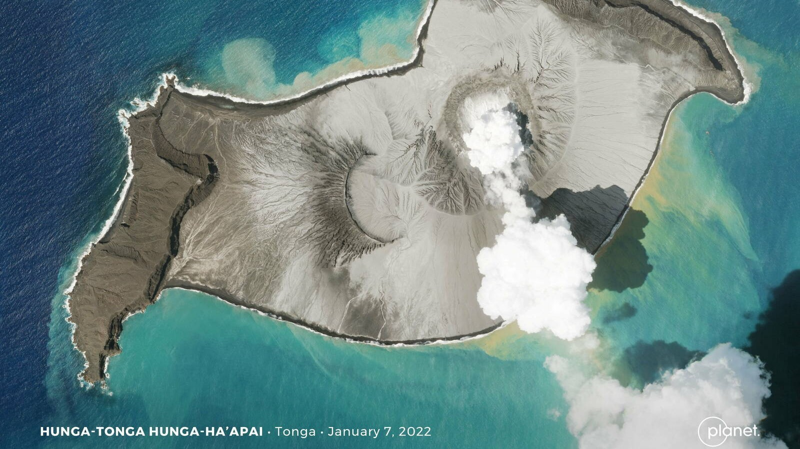
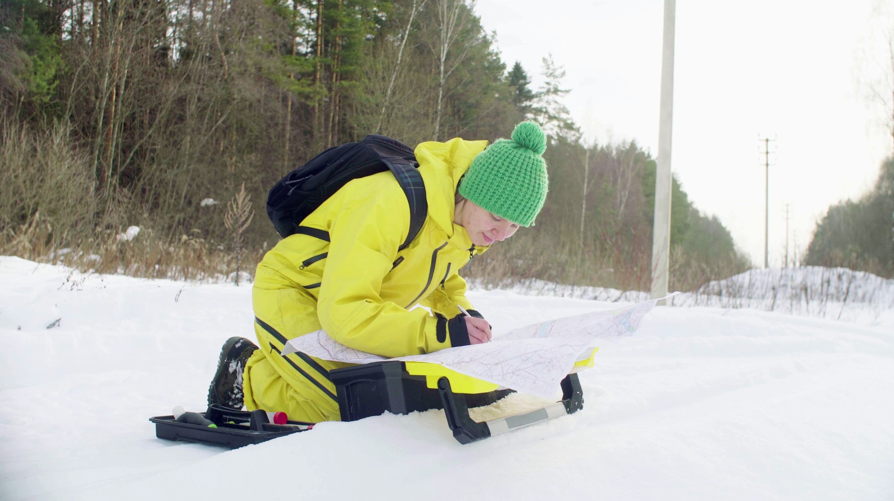

seamless field work

Natural disasters
 Conflicts
Conflicts
Dense environments
 Natural resources management
Natural resources management
2.3.4 Diversified Dugong
560K downloads on Android
4.8⭐ on 5.45K reviews
180K users monthly
30K users QFieldCloud BETA
UN Opensource Geo-data collection tool
 Thanks!
Thanks!